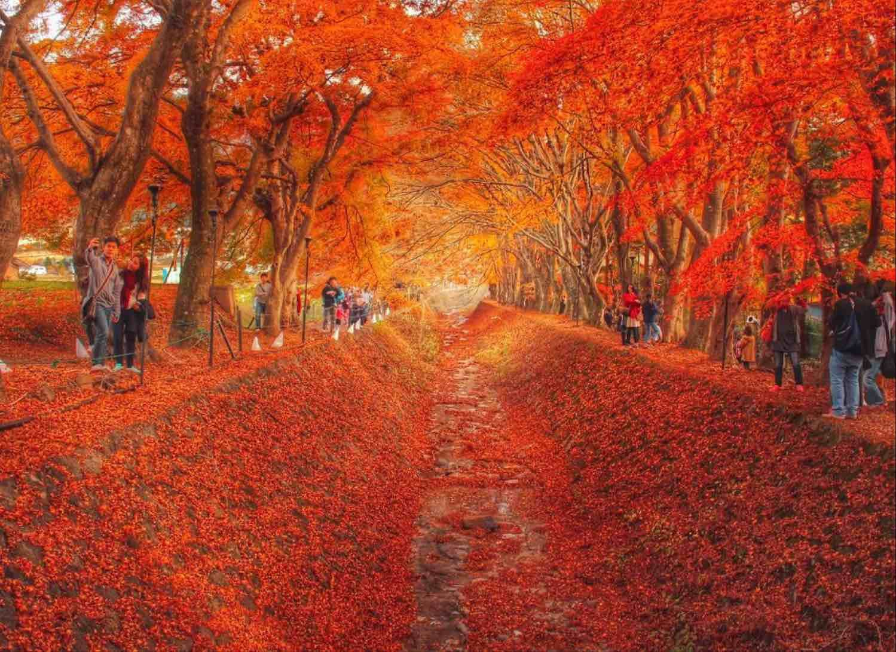
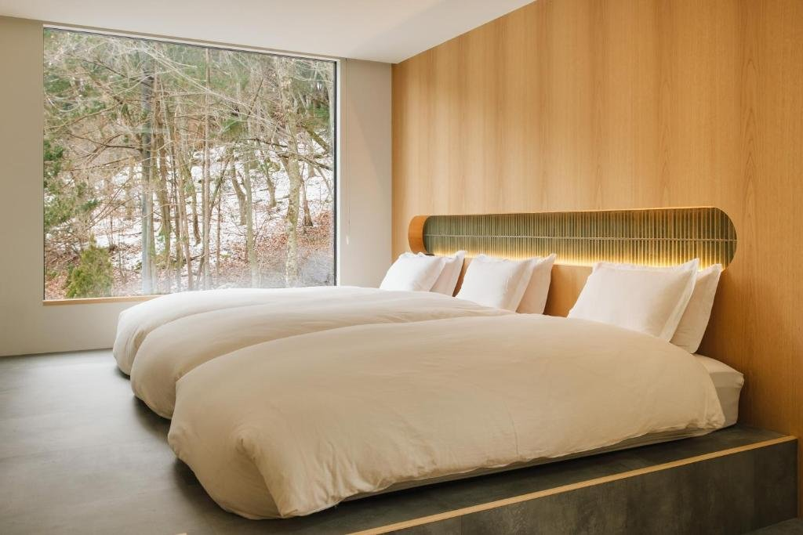
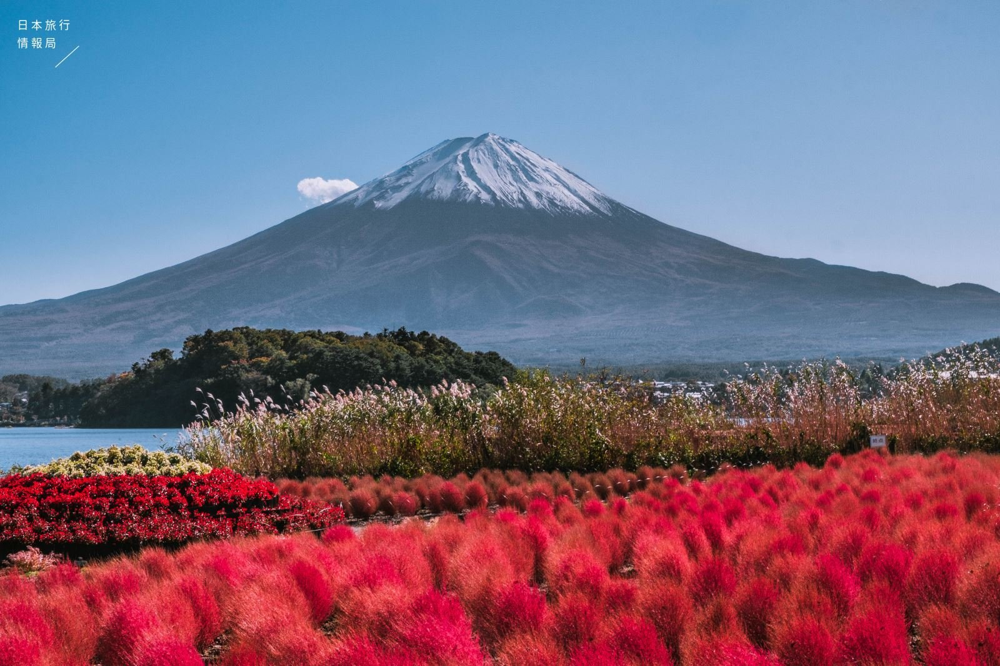

01
山中湖 大池・旭日丘
山中湖是富士五湖裡面積最大、海拔最高的湖，湖上住著一群白天鵝，不怕人，看到岸邊有人還會慢慢游過來。從旭日丘湖畔望出去，湖面、天鵝和雪頂的富士山剛好排在同一個畫面裡。
湖畔是開闊的草地和步道，可以沿著湖邊散步、拍照。
FIG. 01山中湖的天鵝與富士山
11.19 四
早上在三養莊慢慢退房，經御殿場到山中湖看天鵝、吃午餐，下午入住河口湖，晚上去看楓葉迴廊點燈。
享用飯店早餐後退房。經御殿場到山中湖，約 1 小時 15 分。
大池、旭日丘湖畔公園。
入住時間 15:00–19:00，休息、泡茶。
日落（約 16:30）開始點燈，紅葉祭 11/7–11/29，沒有專用停車場。
可參考 Day 5 的餺飥店候選。
山中湖是富士五湖裡面積最大、海拔最高的湖，湖上住著一群白天鵝，不怕人，看到岸邊有人還會慢慢游過來。從旭日丘湖畔望出去，湖面、天鵝和雪頂的富士山剛好排在同一個畫面裡。
湖畔是開闊的草地和步道，可以沿著湖邊散步、拍照。

河口湖北岸一段沿著水道的楓樹步道，兩側的老楓樹枝枒交錯，搭成一條紅色的隧道，落葉鋪滿水道時整條路都是橘紅色。紅葉祭期間（11/7–11/29）日落後約 16:30 開始點燈，一直到 21:00，燈光從下往上照，楓葉像在發光。
旁邊有紅葉祭的攤位，可以買點熱食邊走邊吃。這裡沒有專用停車場，出發前先查好怎麼過去。


2024 年 11 月開幕的設計旅宿，是 hotel norm. 系列的第三棟。整棟包下來給我們四個人住，黑色木牆搭配杉木外觀，藏在奧河口湖的森林邊。名字裡的「ao」是日文的「青」，取自河口湖的藍和森林的綠。
主臥的大窗看得到河口湖，副臥窗外就是森林，偶爾有野生動物經過。屋裡有大浴室和蒸氣三溫暖，還有一間小茶室，可以泡後院自己種的香草茶。連住兩晚，白天出門看紅葉，晚上回來在客廳圍著聊天。

秋日賞楓行 Day 4 / 6